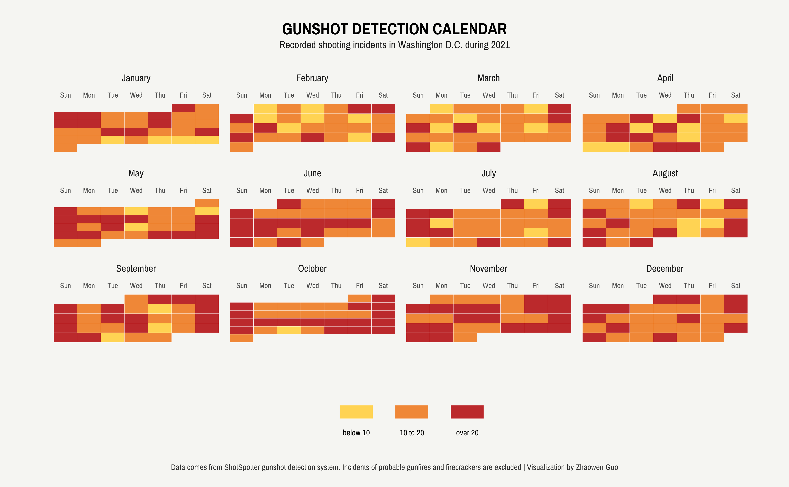

Despite being a small city, Washington, D.C. has the highest homicide rate among all U.S. states, with 226 deaths and 1330 emergency department visits due to gunshot wounds in 2021. As part of its efforts to combat gun violence, the city has adopted innovative strategies and technologies, including ShotSpotter which is a gunshot detection system that uses acoustic sensors to identify and locate gunfire in real-time.
In this blog post, we will examine 2021 gunshot data in D.C. and explore how data visualization can provide deeper insights into gun violence in the city. All code can be found here.
Data Cleaning
Suppose that we are interested in the temporal patterns of gun violence in D.C., one common way to visualize time series data is through line charts. These charts can break down time points into intervals, such as months, to observe how the values of gun violence incidents change over time. While this approach offers valuable insight into high-level temporal trends, it has one limitation: it only allows us to focus on one time interval at a time. For example, we can only see the temporal changes over months OR weeks, but not both intervals together.
Inspired by GitHub’s contribution graph, we can use geom_tile() to create a similar calendar graph that effectively visualizes gun violence incidents. To situate a calendar within a data frame, we can observe clear parallels: the week of the month corresponds to the row number, the day of the week represents the column number, and each month is treated as a separate facet.
One challenge here is to figure out the week for each month. Unfortunately, week() in the lubridate package only returns the week for the year, requiring us to create a week incrementer to manually calculate the week for each month. In other words, we increment the week counter by 1 when we encounter a “Sunday” or when the day is the first of the month.
Moving forward, we can consider whether to treat gunshot incidents as a continuous variable. Upon plotting the data distribution, it becomes apparent that the distribution is highly right-skewed, which means treating it as continuous would not allow for clear differentiation of color in the legend. Therefore, I categorize gunshot incidents to represent low, medium, and high levels of gun violence.
```{r}
library(showtext)
library(lubridate)
library(tidyverse)
gunshot <- read_csv("Shot_Spotter_Gun_Shots.csv")
# data cleaning
gunshot_daily <- gunshot %>%
mutate(date = as_date(DATETIME),
year = year(date)) %>%
filter((year == 2021) & (TYPE %in% c("Single_Gunshot", "Multiple_Gunshots", "Multiple Gunshots", "Single Gunshot"))) %>%
group_by(date) %>%
summarise(shots = n()) %>%
ungroup() %>%
mutate(week_day = str_sub(weekdays(date), 1, 3),
month_day = day(date),
month = month(date),
week_start = ifelse(month_day == 1 | week_day == "Sun", 1, 0)) %>% # set up when to increment the week
group_by(month) %>%
mutate(week = cumsum(week_start),
month_name = months(date)) %>%
ungroup() %>%
mutate(shots_range = case_when(shots <= 10 ~ "1",
shots > 10 & shots <= 20 ~ "2",
shots > 20 ~ "3"))
week_day_code <- c("Sun", "Mon", "Tue", "Wed", "Thu", "Fri", "Sat")
gunshot_daily$week_day <- factor(gunshot_daily$week_day, levels = week_day_code)
month_code <- c("January", "February", "March", "April", "May", "June", "July", "August", "September", "October", "November", "December")
gunshot_daily$month_name <- factor(gunshot_daily$month_name, levels = month_code)
```Data Visualization
Now, let’s visualize the data! Interestingly, the part I spent most time upon was making the month names appear above the weekday names, as they were initially positioned the opposite way. To resolve this issue, we have the option to adjust either the strips (weekday names) or the axes (month names). I decided to go for the former route by increasing the bottom parameter with margin(b=25), which enabled the weekday names to move upwards until they were placed above the month names.
```{r}
# theme
font_add_google("Pragati Narrow")
showtext_auto()
# customize theme
theme_set(theme_minimal(base_family = "Pragati Narrow"))
theme_update(
# legend
legend.title = element_blank(),
legend.position = 'bottom',
legend.direction = 'horizontal',
legend.key.width = unit(1.5, "cm"),
legend.text = element_text(color = "black", size=35),
legend.box.margin = margin(t = 35),
legend.spacing.x = unit(1, "cm"),
legend.spacing.y = unit(0.5, "cm"),
# axis
axis.text.y = element_blank(),
axis.text.x = element_text(vjust = 50),
text = element_text(size = 40),
strip.text.x = element_text(size = 43, margin = margin(b = 25)),
# titles
panel.grid.major = element_blank(),
panel.grid.minor = element_blank(),
plot.margin = margin(20, 50, 20, 50),
plot.background = element_rect(fill = "#f5f5f2", color = NA),
panel.background = element_rect(fill = "#f5f5f2", color = NA),
#legend.title.align=1,
plot.title = element_text(
color = "black",
size = 70,
face = "bold",
margin = margin(t = 10),
hjust = 0.5
),
plot.subtitle = element_text(
color = "grey10",
size = 45,
lineheight = 3,
margin = margin(t = 5, b = 30),
hjust = 0.5
),
plot.title.position = "plot",
plot.caption.position = "plot",
plot.caption = element_text(
color = "grey20",
size = 35,
lineheight = 0.5,
hjust = 0.5,
margin = margin(t = 30))
)
gunshot_daily %>%
ggplot(aes(x = week_day, y = week)) +
geom_tile(aes(fill = shots_range), color = "white") +
scale_fill_manual(values = MetBrewer::met.brewer("Tam", n=3),
labels = c("below 10", "10 to 20", "over 20"),
guide = guide_legend(label.position = "bottom", nrow = 1)) +
facet_wrap(~month_name, scales = "free") +
scale_y_reverse() +
scale_x_discrete(position = "bottom") +
labs(x = "", y = "", title = "GUNSHOT DETECTION CALENDAR",
subtitle = "Recorded shooting incidents in Washington D.C. during 2021",
caption = str_wrap("Data comes from ShotSpotter gunshot detection system. Incidents of probable gunfires and firecrackers are excluded | Visualization by Zhaowen Guo", width = 300))
ggsave("dc-gunshot-time.png", width = 14, height = 14/1.618, units = "in")
```